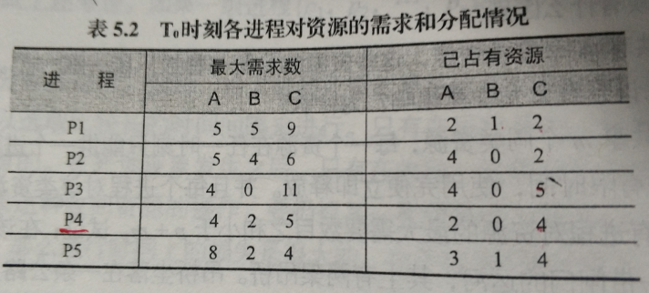

第 5 章 作业 · 资源分配与调度
题目 1磁盘 I/O 请求调度算法的磁头移动
题目
5-5 假设一个可移动磁头的磁盘具有 200 个磁道，其编号为 0~199，当它刚刚结束了 125 道的存取后，现正在处理 143 道的服务请求，假设系统当前的请求序列以请求的先后次序排列如下：86、147、91、177、150、102、175、130。试问对以下几种磁盘 I/O 请求调度算法而言，满足以上请求序列，磁头将分别如何移动？
- 先来先服务算法（FCFS）
- 最短寻道时间优先调度（SSTF）
- 扫描算法（SCAN）
- 循环扫描算法（CSCAN）
参考答案
（1）先来先服务算法（FCFS）
FCFS：143→
（2）最短寻道时间优先调度（SSTF）
SSTF：143→
（3）扫描算法（SCAN）
SCAN：143→
（4）循环扫描算法（CSCAN）
C-SCAN：143→
题目 2三个进程共享四个同类资源会死锁吗
题目
5-9 三个进程共享四个同类资源，这些资源的分配与释放只能一次一个，已知每一进程最多需要两个资源，试问该系统会发生死锁吗？为什么？
参考答案
答：该系统不会发生死锁。
因为最坏情况是每个进程都占有一个资源，申请第二个资源，而此时系统中还剩一个资源，不管这个资源分给哪个进程，都能满足它的资源要求，因此它能在有限时间内运行结束而释放它所占有的两个资源，这两个资源又可以分配给另外两个进程，使它们能够运行结束，所以系统不会发生死锁。
题目 3p 个进程共享 m 个资源不会死锁的证明
题目
5-10 p 个进程共享 m 个同类资源，每一个资源在任一时刻只能供一个进程使用，每一进程对任一资源都只能使用一有限时间，使用完便立即释放，并且每个进程对该类资源的最大需求量小于该类资源的数目，设所有进程对资源的最大需求数目之和小于 p+m，试证在该系统中不会发生死锁。
参考答案
解：采用「反证法」，假定 max(i) 为第 i 个进程最大资源需求量，need(i) 为第 i 个进程还需要的资源量，alloc(i) 为第 i 个进程已分配的资源量，则
max(i)<=m
max(i)=need(i)+alloc(i)
max(1)+Λ+ max(p)=(need(1)+ Λ…+need(p))+(alloc(1)+ Λ…+alloc(p))<p+m
若发生死锁，则需要满足下面两个条件，
① 全部分配，alloc(1)+…+alloc(p)=m；② 所有进程无限等待
由①②可得， need(1)+…+need(p)<p
则死锁后，p 个进程需要的资源小于 p，则一定存在进程 i，need (i) = 0，进程已获得全部资源，进程 i 可以执行完，同假设发生矛盾，所以不会发生死锁。
题目 4运河吊桥的死锁与 P、V 操作同步
题目
5-11 图 5.9 表示一带闸门的运河，其上有两架吊桥，吊桥坐落在一条公路上，为使该公路避开一块沼泽地而其横跨运河两次。运河和公路的交通都是单方向的，运河的基本运输由驳船担负。在一艘驳船接近吊桥 A 时就拉汽笛警告，若桥上无车辆，吊桥就吊起，直到驳船尾部通过该桥为止，对吊桥 B 按同样次序处理。
（本题原图见教材图 5.9，题源文档里是矢量图形对象，无法导出。）
- 一艘典型驳船的长度为 200 米，当它在河道航行时是否会产生死锁？若会，其理由是什么？
- 如何能克服一个可能的死锁？请想出一个防止死锁的办法。
- 如何利用信号灯的 P、V 操作实现车辆和驳船的同步？
参考答案
（1）驳船在河道航行时是否会产生死锁
答：驳船长 200 米，当驳船通过了 A 桥，其船头到达 B 桥，请求 B 桥吊起，而此时它的尾部占据 A 桥，若这个时候 B 桥及 B 桥到 A 桥之间的公路都被汽车占据，而汽车又要求通过 A 桥。这样驳船和汽车都无法前进，形成死锁的局面。
（2）克服死锁的办法
答：方案之一。可规定资源按序申请和分配，从而破坏了死锁的循环等待条件，防止死锁的发生。规定如 B 桥的序号小于 A 桥的序号，驳船和汽车都必须先申请序号小的资源 B 桥，申请得到满足后，再申请序号大的资源 A 桥。
（3）用 P、V 操作实现车辆和驳船的同步
答：将每台车的行驶看作是进程，则有 Auto1，Auto2，ΛAutoi i 个汽车进程。将每条驳船的航行看作是进程，则有 Ship1，Ship2，ΛShipj 个驳船进程。桥 A 和桥 B 对车和船为互斥资源。
方案 1：
main{
int SA=1；//A桥的互斥信号量//
int SB=1；//B桥的互斥信号量//
cobegin
Auto1;Auto2;ΛAutoi;
Ship1; Ship2; ΛShipj;
coend
}
Autoi(){
车在公路上行驶；
P（SB）；
过B桥；
V（SB）；
过弯道；
P（SA）；
过A桥；
V（SA）；
车在公路上行驶；
}
Shipj(){
运河航行；
P（SB）；
P（SA）；
吊起过A桥；
运河航行；
吊起过B桥；
V（SA）；
V（SB）；
运河航行；
}方案 2：方案 1 的缺点是船在过 A 桥前需要先占用 B 桥，使桥的通过率降低，增加交通阻塞的可能。因此方案 2 将弯道作为有界缓中区，基本思想是只要弯道有空，车就可以通过 B 桥，进入弯道。而船则不用先占用 B 桥，使桥的通过率降低。
main{
int SA=1；//A桥的互斥信号量
int SB=1；//B桥的互斥信号量
int Sn=n；//弯道可容纳汽车数n
cobegin
Auto1;Auto2;ΛAutoi;
Ship1; Ship2; ΛShipj;
coend
}
Autoi(){
车在公路上行驶；
P（Sn）；
P（SB）；
过B桥；
V（SB)；
过弯道；
P（SA）；
上A桥；
V（Sn）；
过A桥；
V（SA）；
车在公路上行驶；
}
Shipj(){
运河航行；
P（SA）；
船头行驶至B桥；
P（SB）；
运河航行；
船尾过A桥；
V（SA）；
船尾过B桥；
V（SB）；
运河航行；
}题目 5银行家算法下的安全状态与安全序列
题目
5-14 在采用银行家算法管理资源分配的系统中，有 A、B、C 三类资源可供 5 个进程 P1、P2、P3、P4、P5 共享。3 类资源的总量为 (17, 5, 20)，即 A 类 17 个，B 类 5 个，C 类 20 个。假设 T0 时刻各进程对资源的需求和分配情况如下表所示。

- 现在系统是否处于安全状态？如是，给出一个安全序列。
- T0 时刻，如果进程 P4 和 P1 依次提出 A、B、C 资源请求（2,0,1）和（0,2,0），系统能否满足它们的请求？请说明原因。
参考答案
答：（1）系统处于安全状态，如 P4→P2→P3→P5→P1。
（2）不能满足。由于 P4 与 P1 提出请求后，A、B、C 剩余（0，1，2），此时 A 类无，只能等待拥有足够 A 类资源的进程结束释放 A 类资源，别的进程才能执行，而此时 P4 需（0，2，0），P3 需（0，0，6），而剩余（0，1，2），不能满足要求，产生死锁。